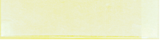
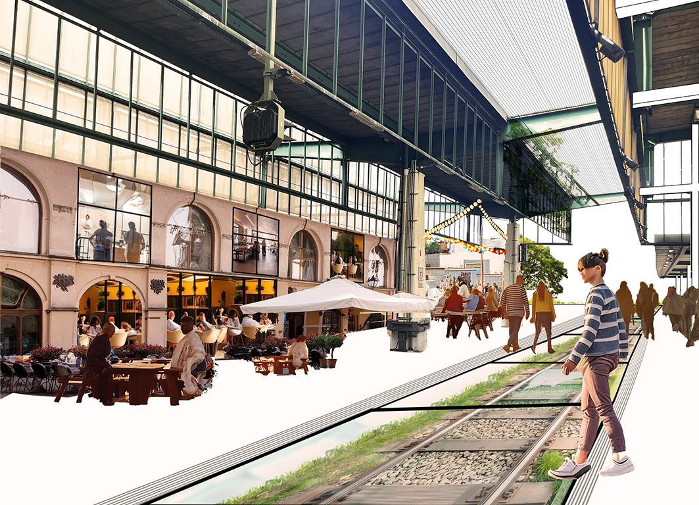
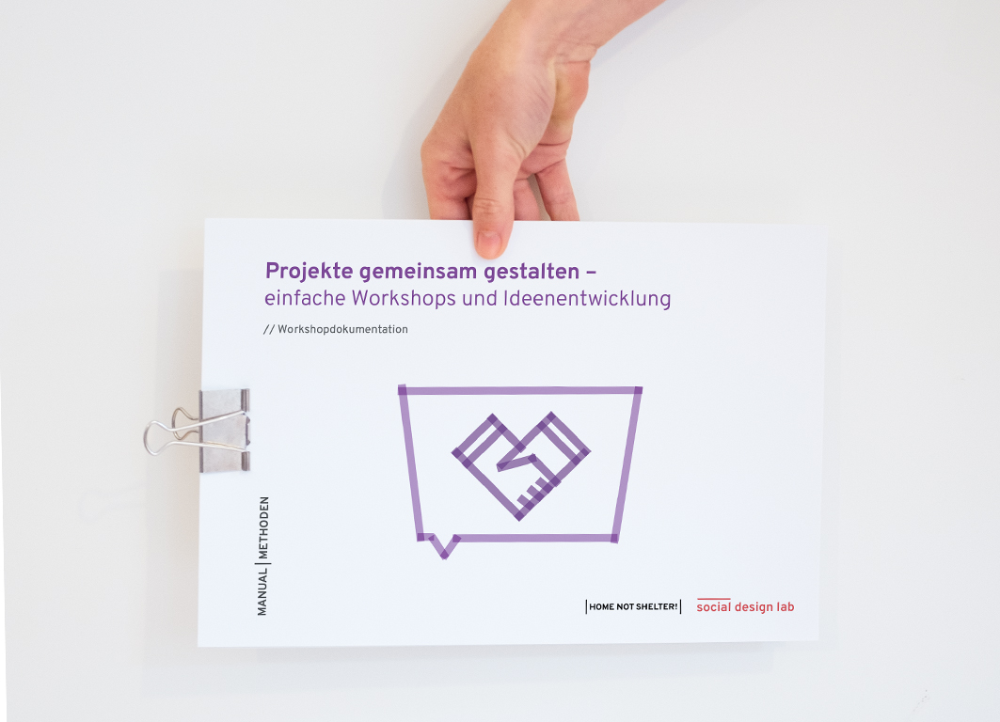
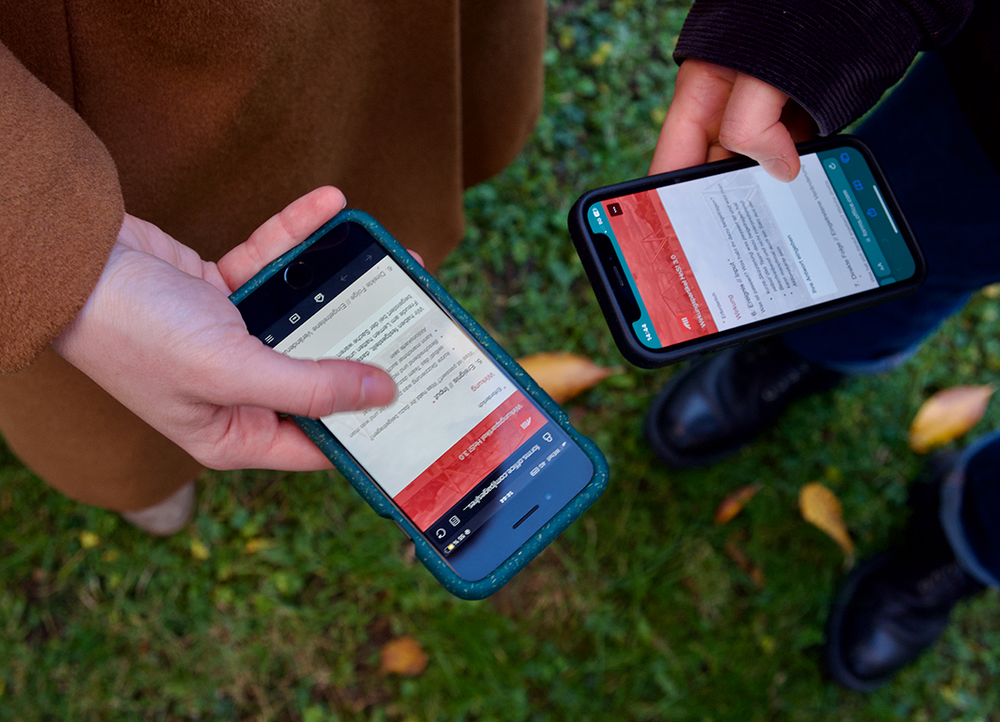
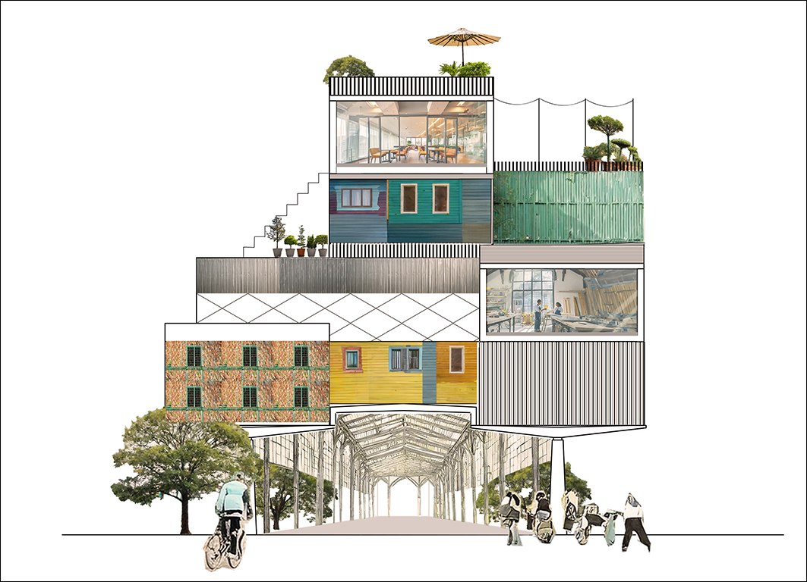
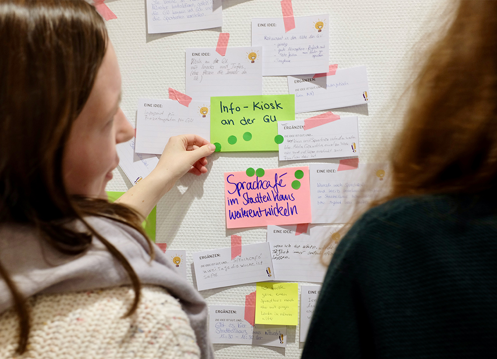
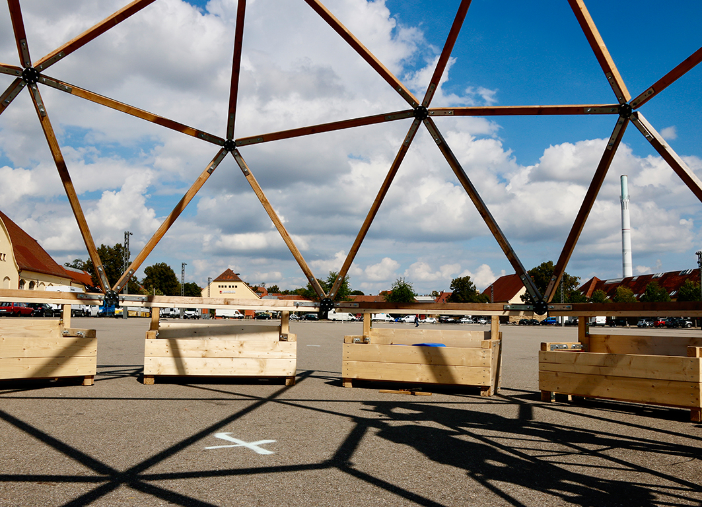
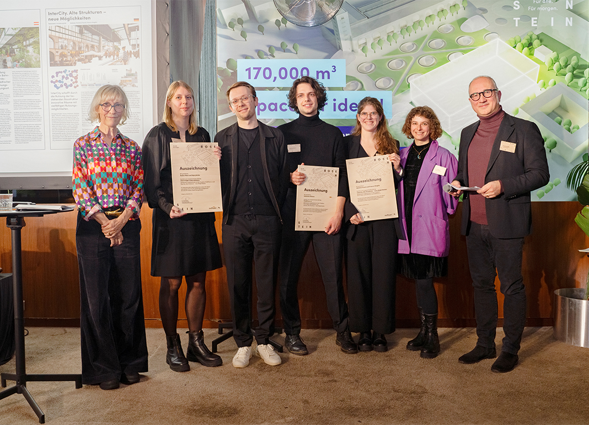
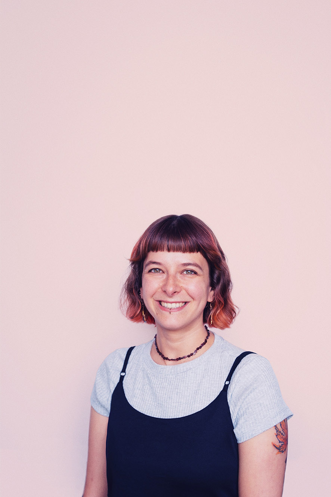

Gemeinsam an gesellschaftlichen Themen arbeiten, Ideen entwickeln und Informationen zugänglich machen. Dafür braucht es gute Gestaltung.
Seit meinem Masterabschluss 2021 im Studiengang Design- und Kommunikationsstrategie arbeitete ich im social design lab der Hans Sauer Stiftung. Dort entwickelte und realisierte ich Projekte mit dem Fokus auf partizipativen Stadtteilprojekte, Kommuniktaionsstrategien, Konzeption und Design Thinking. Ich arbeite gerne in Projekten vor Ort. Die enge Zusammenarbeit mit den Menschen, die selbst involviert sind, ist für mich eine der wichtigsten Voraussetzungen für nachhaltige, menschenzentrierte Gestaltung.
Mit meinem Umzug nach Berlin und dem Ende des Projektzeitraums suche ich ab 2025 nach neuen Herausforderungen in den Bereichen Social Design und Konzeption.

Hi, ich bin Francis Stieglitz,
Social Designerin
mit Schwerpunkt
partizipative Projekte
im Stadtraum.
Kernkompetenzen
- Projektentwicklung und Umsetzung mit Schwerpunkt Partizipation im Stadtraum.
- Komplexe Inhalte zielgruppengerecht und verständlich aufbereiten.
- Angemessene Gestaltung und Texte für unterschiedliche Kommunikationskanäle.
- Entwickeln von Produkten und Testen von Prototypen.
- Arbeiten in interdisziplinären Teams.
Tools
Adobe PS/ ID/ IL/ Firefly/ PR, Affinity Designer/ Publisher/ Photo, Microsoft Office, Miro, Wordpress, Procreate, Midjourney, ChatGPT, SessionLab, Keynote, Figma und very basic HTML & CSS








Portfolio
In meinem Portfolio zeige ich Projekte aus den letzten drei Jahren. Ab 2025 suche ich nach einer neuen Anstellung als Social Designerin oder Konzepterin.
Ausbildung & Skills
März 2021 - Dezember 2024
Social Designerin im
social design lab
der Hans Sauer Stiftung.
2020 – 2022
Freiberufliche Designerin für den Verein
Demokrative.
Sommer 2019
Lehrauftrag an der Hochschule Augsburg zum Thema: Humancentered Design und Design Thinking.
2018 – 2020
Master of Arts an der Hochschule Augsburg, Fakultät für
Gestaltung, Design und Kommunikationsstrategie MA.
2015 – 2018
Hochschule für angewandte Wissenschaft München im
Fach Kommunikationsdesign.
2011 – 2015
Bachelor of Arts an der Ludwig-Maximilians-Universität
München in den Fächern Kunstpädagogik BA (HF), Philosophie (NF)
Weitere Aktivitäten
- Preisträgerin im Wettbewerb Stuttgart Rosenstein – Raum für Ideen
- Interview im Beitrag Mehr als schöner Schein: Social Design
